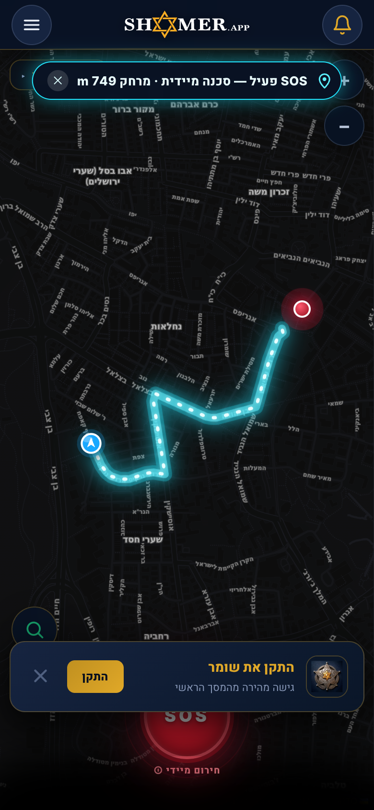

One tap. You're not alone.
אזעקה חזקה. מיקום מדויק. עזרה מהירה — בלחיצה אחת. מהמעגל שאתם סומכים עליו ומשומרים פעילים בקרבת מקום.
בלי חנות, בלי הורדה — נפתח ישירות בדפדפן. מדריך החירום זמין גם ללא רשת. שתפו עם השומרים שלכם.




נבנה סביב מה שבאמת עוזר ברגע האמת — בלי הבטחות שווא.
לחיצה אחת מפעילה אזעקה ומשגרת את מיקומכם למעגל האמון שלכם ולשומרים פעילים בקרבת מקום שיכולים להגיב — לא רק להתריע.
מעגל האמון שלכם — משפחה וחברים שרואים את מיקומכם החי ומקבלים תזכורת הגעה. בהזמנה ובאישור בלבד, וניתן לעצור בכל רגע.
עזרה ראשונה מצילת חיים — החייאה, חנק, דימום, שבץ ועוד — בכרטיסים ברורים שנטענים גם ללא חיבור לאינטרנט.
בלי חנות אפליקציות ובלי הרשמה מסובכת — מוכנים לפני שהחירום מגיע.
ישירות בדפדפן — בלי חנות ובלי הורדה. „הוסף למסך הבית" והאפליקציה מוכנה כמו כל אפליקציה.
משפחה, חברים, שכנים. הם רואים אתכם ואתם אותם — ומקבלים התראה מיידית כשצריך.
אזעקה חזקה + מיקום מדויק לשומרים שלכם ולשומרים פעילים בקרבת מקום שיכולים להגיב (בכפוף לחיבור רשת).
כששולחים SOS, האירוע מופיע על המפה החיה של שומרים פעילים בקרבת מקום. הם רואים את המיקום, מקבלים מסלול — ויכולים לצאת לעזור.
מעגל אמון של משפחה וחברים. כשמישהו במעגל שולח SOS — כולם מקבלים התראה, ורואים שהגיע הביתה בשלום.
הליכה לבד, תחבורה, לילה בעיר. לחיצה אחת — השומרים שלך ושומרים בקרבת מקום מקבלים מיקום ואזעקה.
מפה חיה של אירועים ושומרים פעילים בקרבת מקום. דיווח מהיר ועזרה הדדית בין שכנים.
בלי חנות אפליקציות, בלי הורדה. מדריך החירום זמין גם ללא רשת. ככל שיותר שכנים מצטרפים — כולם בטוחים יותר.
אחרי הפתיחה: „שתף" → „הוסף למסך הבית".